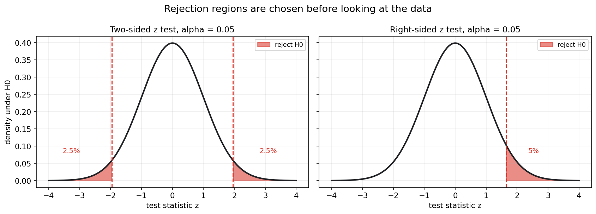
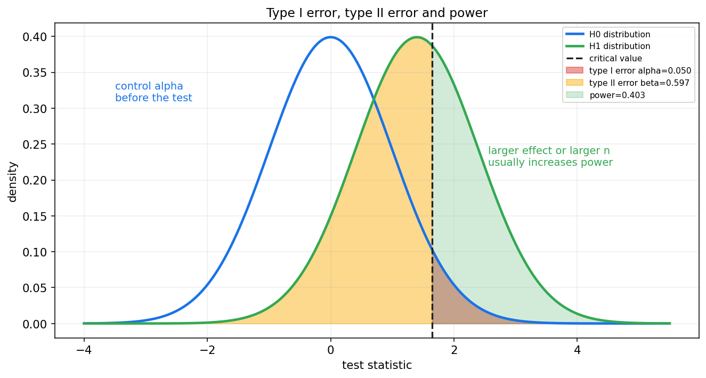
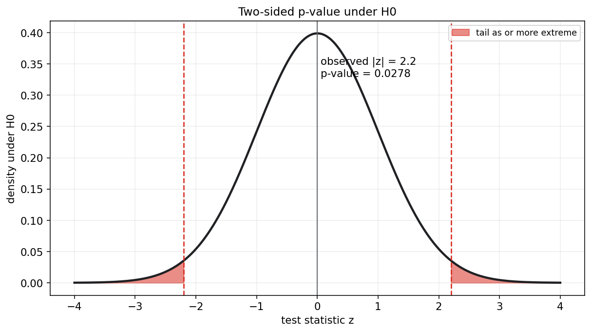
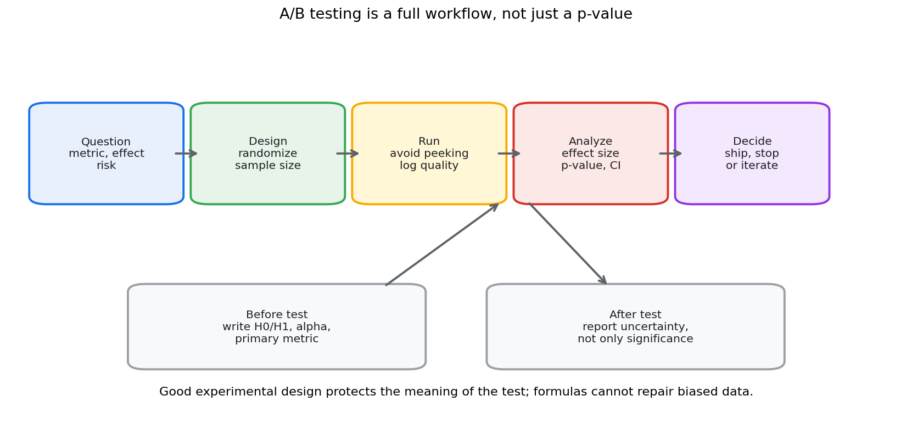

数理统计第九章教程: 假设检验, p 值, 功效与实验设计
第八章解决的是估计问题:
参数大概是多少? 不确定性有多大?
第九章进一步问:
1. 眼前数据是否足够反对一个基准说法?
2. 我们怎样控制误判概率?
3. p 值, 显著性水平, 功效到底分别在说什么?
4. 为什么统计检验不能替代好的实验设计?这一章是从"估计一个数"走向"做一个判断"的核心章节.
0. 先看全章主线
第九章的主线可以压成下面这张图:
flowchart LR
A["研究问题"] --> B["原假设 H0<br/>基准陈述"]
A --> C["备择假设 H1<br/>想发现的偏离"]
B --> D["检验统计量<br/>把样本压成证据"]
C --> D
D --> E["H0 下的分布<br/>证据应该怎样波动"]
E --> F["拒绝域<br/>显著性水平 alpha"]
E --> G["p 值<br/>至少同样极端的概率"]
F --> H["结论<br/>拒绝或不拒绝 H0"]
G --> H
H --> I["错误与功效<br/>type I, type II, power"]
I --> J["实验设计<br/>效应大小, 样本量, 多重比较"]一句话概括这一章:
假设检验不是证明某个结论绝对为真,
而是在控制错误概率的前提下,
判断样本证据是否足够反对某个基准陈述.
1. 假设检验到底在做什么
1.1 从一个具体问题开始
假设一个产品团队上线了新推荐策略.
他们想知道:
新策略是否提高了点击率?
如果新策略样本点击率比旧策略高, 这当然是一个信号.
但问题是:
这个差异是系统性提升, 还是随机抽样波动?
假设检验就是为这类问题服务的.
1.2 检验的基本语气
假设检验通常先设立一个基准说法:
再问:
如果 $H_0$ 真的成立, 现在这么极端的数据有多罕见?
如果非常罕见, 我们就拒绝 $H_0$.
如果不够罕见, 我们就不拒绝 $H_0$.
注意这里的语言:
- 拒绝 $H_0$: 数据提供了足够证据反对 $H_0$
- 不拒绝 $H_0$: 数据证据不足以反对 $H_0$
不要把"不拒绝"说成"证明 $H_0$ 成立".
2. 原假设与备择假设
2.1 原假设 H0
原假设通常是基准, 无差异, 无效果, 无变化的陈述.
例如:
或:
它不是一定代表我们相信它是真的.
它是检验时用来构造参照分布的基准模型.
2.2 备择假设 H1
备择假设描述我们关心的偏离方向.
常见形式:
- 双侧检验:
- 右侧检验:
- 左侧检验:
2.3 先定假设, 再看数据
假设检验的设计原则是:
在看结果之前, 明确 $H_0$, $H_1$, 显著性水平, 主指标和分析方法.
如果看完数据再挑方向, 再挑指标, 再挑检验方法, p 值就会失去原本意义.
这也是实验设计和预注册思想的基础.
3. 检验统计量与拒绝域
3.1 检验统计量
检验统计量是从样本算出来的一个数:
它把样本压缩成检验证据.
例如单总体均值检验中, 若方差已知:
如果 $H_0:\mu=\mu_0$ 成立, 则:
于是我们可以判断观察到的 $z$ 是否太极端.
3.2 拒绝域
拒绝域是检验统计量落入后就拒绝 $H_0$ 的区域.
例如双侧 z 检验, 显著性水平为 $0.05$ 时:
就是拒绝域.

图中红色区域是在 $H_0$ 成立时预先留出的极端区域.
如果观察到的检验统计量落入红色区域, 就拒绝 $H_0$.
3.3 显著性水平 alpha
显著性水平 $\alpha$ 是我们愿意承受的第一类错误概率上限.
常用:
它表示:
如果 $H_0$ 真的成立, 检验规则错误拒绝它的概率控制在 $5%$.
显著性水平必须在看数据之前设定.
4. 第一类错误, 第二类错误与功效
4.1 两类错误
假设检验是在不确定性下做判断, 所以一定可能犯错.
两类错误如下:
| 真实情况 | 检验结论 | 名称 |
|---|---|---|
| $H_0$ 真实 | 拒绝 $H_0$ | 第一类错误 |
| $H_1$ 真实 | 不拒绝 $H_0$ | 第二类错误 |
第一类错误概率记为:
第二类错误概率记为:
4.2 功效 power
功效定义为:
它表示:
当真实存在某个效应时, 检验能发现它的概率.
功效越高, 漏掉真实效应的概率越低.

这张图的直觉是:
- 红色区域: $H_0$ 真实却拒绝它, 即第一类错误
- 黄色区域: $H_1$ 真实却没拒绝 $H_0$, 即第二类错误
- 绿色区域: $H_1$ 真实且成功拒绝 $H_0$, 即功效
4.3 alpha 和 beta 的权衡
在样本量和效应大小固定时, 降低 $\alpha$ 通常会让拒绝域更小, 从而增大 $\beta$.
也就是说:
更严格地控制误报, 往往会降低发现真实效应的能力.
提高功效常见方式:
- 增大样本量
- 降低测量噪声
- 使用更有效的实验设计, 如配对设计
- 聚焦更稳定的主指标
- 接受更大的 $\alpha$, 但这会增加误报风险
5. p 值
5.1 定义
p 值是在 $H_0$ 成立的前提下, 观察到当前数据这样极端或更极端结果的概率.
对双侧 z 检验, 如果观察到 $z_{\mathrm{obs}}$, 则:
其中:

图中红色尾部面积就是双侧 p 值.
5.2 p 值和显著性水平的关系
常用规则:
如果 $\alpha=0.05$, p 值为 $0.03$, 则拒绝 $H_0$.
如果 p 值为 $0.12$, 则不拒绝 $H_0$.
5.3 p 值不是这些东西
p 值不是:
- $H_0$ 为真的概率
- $H_1$ 为真的概率
- 结果由随机性导致的概率
- 效应大小
- 结果重要性的度量
p 值只回答一个条件问题:
假如 $H_0$ 成立, 当前或更极端的数据有多罕见?
5.4 小 p 值和大样本
大样本下, 非常小的差异也可能产生很小的 p 值.
因此显著不等于重要.
报告检验结果时, 应同时报告:
- 效应大小
- 置信区间
- p 值
- 样本量
- 实验设计和数据质量
6. 单侧检验与双侧检验
6.1 什么时候用双侧
如果关心的是是否有差异, 不预先指定方向, 用双侧检验.
例如:
双侧检验把显著性水平分到两端.
6.2 什么时候用单侧
如果研究问题在实验前就明确只关心一个方向, 可以用单侧检验.
例如药物安全阈值:
但不能因为数据朝某个方向显著, 事后把双侧改成单侧.
6.3 方向必须由问题决定
单侧还是双侧, 应由业务问题, 科学假设和风险结构决定.
不应由观察结果决定.
7. 单总体均值检验
7.1 方差已知的 z 检验
设:
且 $\sigma$ 已知.
检验:
使用统计量:
在 $H_0$ 下:
双侧检验的 p 值为:
这里右侧的 $Z$ 表示标准正态随机变量.
7.2 方差未知的 t 检验
若 $\sigma$ 未知, 用样本标准差 $S$ 替代:
正态总体下, 若 $H_0$ 成立:
所以小样本且方差未知时, t 检验比 z 检验更合适.
7.3 t 检验的条件
t 检验的经典精确结论依赖正态总体.
大样本下可以借助中心极限定理近似, 但如果数据强偏态, 重尾或有严重离群点, 需要谨慎.
8. 两总体均值检验
8.1 独立样本均值差
若有两组独立样本:
常见目标是检验:
估计量为:
标准误近似为:
常用 Welch t 检验处理两组方差不一定相等的情形.
8.2 配对样本均值差
如果两个观测来自同一对象的前后测量或匹配单位, 应先构造差值:
再检验:
配对设计能消除个体基线差异, 常常比独立样本设计更有功效.
8.3 不要混淆独立和配对
独立样本和配对样本的标准误不同.
如果把配对数据当独立样本, 可能浪费信息.
如果把独立数据当配对样本, 则可能构造出没有意义的差值.
9. 比例检验初步
9.1 单总体比例
对 Bernoulli 数据, 总体比例为 $p$.
检验:
样本比例:
大样本下, 若 $H_0$ 成立:
注意分母使用的是 $H_0$ 下的 $p_0$, 因为检验统计量的零假设分布要在 $H_0$ 下构造.
9.2 两总体比例差
A/B 测试中常检验:
估计差异:
在 $H_0$ 下通常使用合并比例:
标准误为:
检验统计量为:
9.3 小样本和边界
当样本量小, 或成功次数很少时, 正态近似可能不好.
这时可以考虑精确检验或基于二项分布的区间方法.
10. Chi-square 拟合优度检验
10.1 问题形式
拟合优度检验问的是:
观测到的类别频数是否和某个理论分布一致?
例如一个骰子是否公平.
若投掷 $n$ 次, 六个面观测频数为:
公平骰子下期望频数为:
10.2 检验统计量
Chi-square 拟合优度统计量为:
在常规条件下, 若 $H_0$ 成立:
若理论分布中还估计了参数, 自由度要相应减少.
10.3 适用条件
Chi-square 近似需要期望频数不能太小.
如果很多类别期望频数过低, 可以合并类别或使用更合适的精确方法.
11. Chi-square 独立性检验
11.1 问题形式
独立性检验用于列联表.
例如想判断:
用户设备类型和是否购买是否独立?
列联表中每个格子的观测频数记为:
11.2 零假设下的期望频数
原假设是两个分类变量独立.
在 $H_0$ 下, 第 $i$ 行第 $j$ 列的期望频数为:
检验统计量为:
若表格大小为 $r\times c$, 自由度为:
11.3 独立性检验只说明关联
拒绝独立性原假设表示两个分类变量之间存在统计关联.
它不自动说明因果关系.
因果解释需要实验设计, 随机分配, 混杂控制等额外条件.
12. 多重比较初步
12.1 为什么多重检验会出问题
如果做一次 $\alpha=0.05$ 的检验, 在 $H_0$ 全部成立时, 误报概率是 $5%$.
如果同时做很多次检验, 至少一次误报的概率会变大.
若做 $m$ 个独立检验, 每个检验显著性水平为 $\alpha$, 则至少一次误报概率为:
例如 $m=20,\alpha=0.05$:
这说明:
大量试指标, 试分组, 试窗口, 很容易制造看似显著的结果.
12.2 Bonferroni 校正
一种简单保守的做法是 Bonferroni 校正:
它控制整体第一类错误概率, 但可能降低功效.
12.3 FDR 思想
在大规模检验中, 有时更关心发现结果中假阳性的比例.
这时会使用 FDR 控制方法, 如 Benjamini-Hochberg.
本章先记住:
多重比较必须被记录和控制, 不能只挑显著结果报告.
13. A/B 测试与实验设计直觉
13.1 A/B 测试不是只算 p 值
一个合格的 A/B 测试流程包括:

核心不是最后那一个 p 值, 而是整个流程是否可靠.
13.2 实验前要定什么
实验前至少明确:
- 主指标
- 最小有意义效应 MDE
- 显著性水平 $\alpha$
- 目标功效 $1-\beta$
- 样本量
- 随机化单位
- 排除规则
- 实验持续时间
- 是否允许中途查看和提前停止
这些决定如果事后调整, 会影响检验结论的可信度.
13.3 效应大小比显著性更接近决策
p 值小只说明在 $H_0$ 下数据罕见.
是否值得上线, 还要看:
- 提升幅度是否有业务意义
- 置信区间是否排除了太小的效果
- 是否影响护栏指标
- 实验是否覆盖关键人群
- 是否有长期副作用
统计显著不等于业务显著.
13.4 坏数据无法靠检验修好
如果随机化失败, 埋点错误, 样本泄漏, 指标选择偏差, 多次偷看结果, 检验公式本身无法补救.
实验设计保护的是统计结论的语义.
没有好的设计, p 值很容易只是一个形式化数字.
14. p-hacking, optional stopping 与选择性报告
14.1 p-hacking
p-hacking 指通过反复尝试分析方式来寻找显著结果, 例如:
- 试很多指标
- 试很多样本过滤规则
- 试很多时间窗口
- 试单侧和双侧
- 试不同模型设定
如果只报告显著的那一次, p 值就不再反映原来的错误控制.
14.2 optional stopping
optional stopping 指不断查看实验结果, 一显著就停止.
普通固定样本量检验并不允许这种操作.
如果需要中途分析, 应使用序贯检验或 alpha spending 等专门设计.
14.3 选择性报告
只报告显著结果, 隐藏不显著结果, 会让整体证据被系统性夸大.
这也是科研和数据分析中常见的可重复性风险.
15. 假设检验和置信区间的关系
15.1 双侧检验和置信区间
在许多常见情形中, 双侧显著性水平为 $\alpha$ 的检验, 与 $1-\alpha$ 置信区间有对应关系.
例如检验:
如果 $\mu_0$ 不在 $95%$ 置信区间内, 则双侧 $\alpha=0.05$ 检验会拒绝 $H_0$.
如果 $\mu_0$ 在区间内, 则通常不拒绝 $H_0$.
15.2 区间提供更多信息
单独 p 值只告诉你是否越过某个显著性门槛.
置信区间还告诉你:
- 效应方向
- 合理效应大小范围
- 不确定性规模
所以实际报告中, 区间估计通常比只有 p 值更有信息.
16. 本章主线总结
第九章可以压成几句话:
- 假设检验先设定 $H_0$ 和 $H_1$
- 在 $H_0$ 下构造检验统计量的分布
- 用显著性水平确定拒绝域, 或用 p 值衡量极端程度
- 第一类错误是错拒真 $H_0$, 第二类错误是漏掉真实效应
- 功效是发现真实效应的概率
- 单侧和双侧必须由研究问题预先决定
- 多重比较会放大误报风险
- 好的实验设计比事后套公式更重要
本章最重要的语言规范是:
p 值不是原假设为真的概率,
不拒绝原假设也不是证明原假设成立.
17. 典型题型与实战清单
17.1 典型题型
- 写出原假设和备择假设
- 明确参数
- 明确单侧还是双侧
- 选择检验统计量
- 均值用 z 或 t
- 比例用比例 z 检验
- 类别频数用 Chi-square
- 计算 p 值
- 先确定零假设分布
- 再计算当前或更极端结果的概率
- 根据显著性水平作结论
- $p\le\alpha$ 拒绝 $H_0$
- $p>\alpha$ 不拒绝 $H_0$
- 解释错误概率和功效
- 识别 type I error
- 识别 type II error
- 理解 power 和样本量的关系
- 判断是否存在多重比较
- 多指标
- 多分组
- 多时间窗口
- 多模型设定
17.2 实战清单
做检验前, 先问:
- 研究问题是什么?
- 主指标是什么?
- $H_0$ 和 $H_1$ 是否在看数据前确定?
- 单侧还是双侧?
- 显著性水平是多少?
- 目标功效是多少?
- 样本量是否足够?
- 数据是否独立?
- 随机化是否可靠?
- 是否存在多重比较或中途偷看?
做检验后, 再问:
- p 值是多少?
- 效应大小是多少?
- 置信区间是什么?
- 结果是否有实际意义?
- 结论依赖哪些假设?
- 是否需要复现实验或长期观察?
18. 典型误区
误区 1: 把 p 值当成 $H_0$ 为真的概率
p 值是:
不是:
后者属于贝叶斯后验概率问题.
误区 2: 把不拒绝 $H_0$ 说成证明 $H_0$
不拒绝只表示证据不足.
可能是效应真的不存在, 也可能是样本量太小, 噪声太大, 功效不足.
误区 3: 只看显著性, 不看效应大小
大样本会让很小的差异也显著.
小样本则可能让重要差异不显著.
所以 p 值必须和效应大小, 置信区间一起看.
误区 4: 事后选择单侧检验
单侧方向必须在看数据前由问题决定.
不能因为观察结果朝某个方向, 事后切换到单侧检验.
误区 5: 忽略多重比较
大量尝试后只报告显著结果, 会显著增加假阳性风险.
误区 6: 用检验弥补坏实验
如果数据来源有偏, 随机化失败或指标被污染, 再精细的检验也不能保证结论可靠.
19. 和前后章节的连接点
19.1 和第八章的连接
第八章讲估计和置信区间.
本章讲检验和决策规则.
它们都建立在抽样分布上:
- 区间估计问哪些参数值合理
- 假设检验问某个参数值是否被数据反对
19.2 和第十章的连接
回归和方差分析中会大量使用:
- t 检验
- F 检验
- 系数显著性
- 模型整体显著性
所以本章是第十章统计建模推断语言的前置.
19.3 和第十九章的连接
模型评估, A/B 测试, 多指标决策, 上线判断, 都会遇到:
- 多重比较
- 选择性报告
- 效应大小和风险权衡
- 统计显著与业务显著的差异
第十九章会把这些内容放进真实数据工作流里.
20. 本章收尾
假设检验的核心不是给世界盖章, 说某个命题一定真或一定假.
它做的是更克制的事情:
在明确规则和错误控制下,
判断当前样本是否足够反对某个基准假设.
因此, 学会检验公式只是第一步.
更重要的是学会正确设计实验, 解释 p 值, 报告效应大小, 并承认结论的限制.